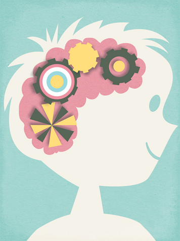

Tutto è iniziato da un nonno che voleva rendere felici i suoi nipoti. Lo svizzero Heinrich Hurter fabbricò a mano un gioco composto da cartoncini quadrati sui quali incollò dei ritagli di cataloghi illustrati, i soggetti uguali erano sempre doppi. La famiglia di suo figlio, William, si divertiva talmente tanto con quel gioco che gli amici lo incoraggiarono a proporlo a qualcuno che lo producesse. CosÌ, nel dicembre 1957, William Hurter contattò la Otto Maier Verlag e, nel gennaio 1958, presentò all’azienda il suo gioco. Pochi giorni dopo, l’editore gli promise che avrebbe presentato il Memory® durante la fiera del giocattolo di Norimberga, a fine di febbraio 1959.
Il primo Memory® Ravensburger fu lanciato il 15 aprile 1959 con il titolo “Memory® Bilder” (immagini Memory®). Si trattava di un gioco composto da 108 carte, formato 5x5cm, e racchiuso in una confezione quadrata di 20x20cm. I soggetti provenivano da libri, giocattoli e cataloghi dell’editore, tra gli altri: le “house of cards” (castelli di carte) di Ray e Charles Eames, celebri in tutto il mondo, e le illustrazioni prese dal libro “La nuova arca di Noè” di Alice e Martin Provensens . C’era anche il nuovo logo della Otto Maier Verlag il triangolo con la pedina a forma di cono appuntito.
Sono molti i curiosi che vorrebbero vedere la versione originale inventata a casa Hurter. Purtroppo, non è più disponibile, perché, all’epoca, William Hurter la portò via con sé. In fondo, è comprensibile: i suoi bambini non amavano rinunciare troppo a lungo al loro gioco preferito.
Susanne Wilpers, professoressa presso l’università di Heilbronn, risponde alla domanda: perché i genitori non hanno nessuna possibilità di battere i figli quando giocano contro di loro a Memory®?
Susanne Wilpers è stata convinta per anni di essere dotata di una memoria formidabile, fino a quando suo figlio, a tre anni, non l’ha battuta giocando a Memory®.
Da quel momento, Susanne ha iniziato a studiare a fondo le capacità mnemoniche dei bambini e ha trovato una risposta affascinante che ne spiega la superiorità: le cellule del loro cervello sono collegate con 200 trilioni di sinapsi, il doppio di quelle degli adulti. Con questa imbattibile capacità di elaborazione, i bambini sono in grado di cogliere tutti i dettagli delle carte e la loro posizione.
Il cervello si forma negli anni

Il vantaggio nel giocare a Memory® diminuisce di anno in anno: a partire dalla pubertà, il numero delle sinapsi cala in modo evidente, ma non perché si diventa più sciocchi, bensÌ perché diventiamo più intelligenti, spiega la professoressa Wilpers.
Con l’apprendimento, il cervello conosce sempre meglio l’autostrada di sinapsi che gli consente di procedere più velocemente, quindi, nel tempo, utilizza meno collegamenti tra le cellule nervose. Dunque, il cervello elimina le sinapsi non utilizzate che, però, sono proprio quelle necessarie per disporre di tutta la forza mentale che ci permette di trovare le coppie di carte nel Memory®.
Per questo i bambini non mettono bene in fila le carte come, invece, fanno gli adulti per ricordare meglio. Se la cavano benissimo anche quando le carte sono disposte in modo caotico, perchò non pensano per categorie e quindi, in loro, la circolazione dei pensieri è minore.
La motivazione è molto importante.
Secondo la professoressa, anche la motivazione non è un fattore da trascurare: i bambini intuiscono di avere la reale possibilità di vincere la partita a Memory® e ce la mettono tutta per riuscirci.
Gli adulti, invece, spesso non partecipano sfruttando tutti i sensi, forse perché pensano di non avere comunque nessuna chance contro i propri figli.
La scoperta della superiorità dei bambini nel memorizzare le carte è l’ulteriore conferma che Memory® di Ravensburger è un gioco ideale per la famiglia.